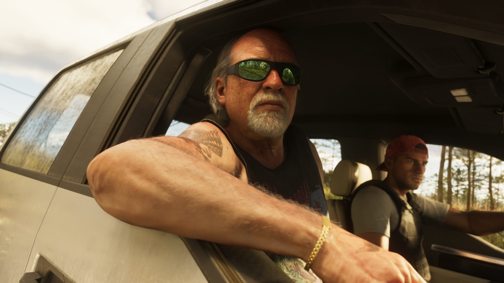
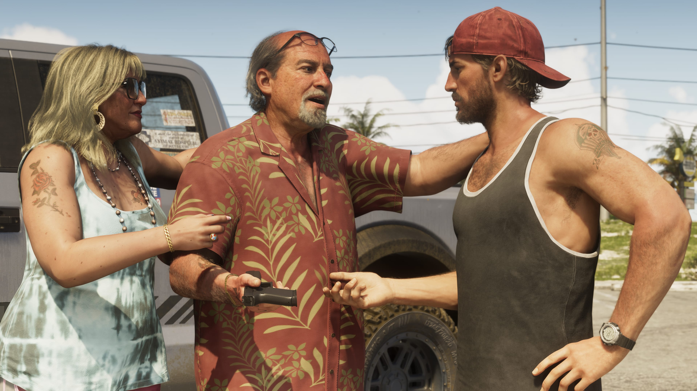
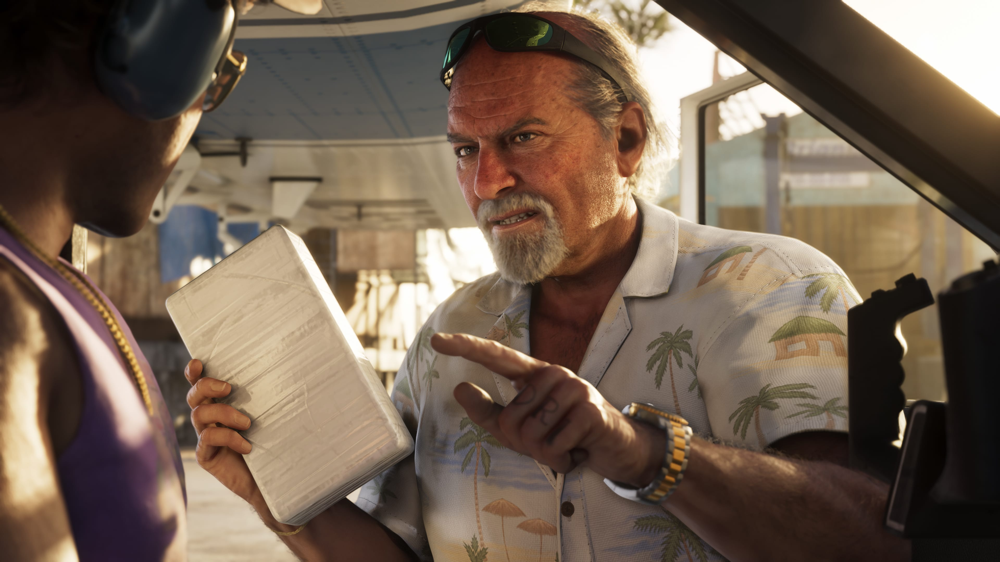

Jason Duval
Jason vive em uma das propriedades de Brian sem pagar aluguel e, em troca, ajuda com alguns serviços locais.
Conhecer Jason

Brian Heder é um veterano traficante das Leonida Keys em Grand Theft Auto VI, ligado à época de ouro do contrabando na região.
Embora já tenha vivido tempos mais intensos, Brian continua movimentando produto através de seu estaleiro e mantém Jason Duval e Cal Hampton em seu círculo.
Brian Heder é apresentado como um traficante da velha guarda das Leonida Keys.
Ele viveu a época de ouro do contrabando na região e construiu uma vida ligada às atividades criminosas que atravessam as ilhas do sul de Leonida.
Os melhores dias de Brian podem ter ficado para trás, mas ele ainda está ativo. Seu estaleiro continua sendo utilizado para movimentar produto pela região.
Essa experiência faz de Brian uma das conexões já estabelecidas no mundo de Jason antes dos principais acontecimentos de GTA VI.
A vida de Brian está diretamente ligada às Leonida Keys, uma região de ilhas tropicais localizada no estado de Leonida.
Seu estaleiro funciona como parte importante de suas atividades. Mesmo depois dos anos de maior intensidade do contrabando, Brian continua utilizando o local para movimentar produto.
O cenário ajuda a estabelecer um dos núcleos criminosos que cercam Jason Duval no início da história conhecida de GTA VI.

Brian possui ligação direta com Jason Duval e Cal Hampton nas Leonida Keys.
Jason vive gratuitamente em uma das propriedades de Brian. Em troca, ajuda o veterano traficante com alguns serviços locais.
Cal Hampton também é apresentado como associado de Brian e amigo de Jason, formando uma conexão entre os três personagens.
Esse círculo estabelece parte da vida de Jason nas Keys antes que os acontecimentos envolvendo Lucia Caminos levem sua história para uma escala muito maior.

A apresentação oficial de Brian também oferece alguns detalhes sobre sua vida pessoal.
Ele é casado com Lori, sua terceira esposa, e parece aproveitar uma vida relativamente confortável nas Keys enquanto continua envolvido em seus negócios.
A combinação entre o passado ligado ao contrabando, o estaleiro e sua vida atual ajuda a apresentar Brian como um criminoso experiente que já está estabelecido na região quando GTA VI começa.
Personagens diretamente associados a Brian nos materiais oficiais de Grand Theft Auto VI.
Jason vive em uma das propriedades de Brian sem pagar aluguel e, em troca, ajuda com alguns serviços locais.
Conhecer JasonCal é outro associado de Brian e também amigo de Jason Duval nas Leonida Keys.
Conhecer CalLori é apresentada oficialmente como a terceira esposa de Brian Heder.
Imagens oficiais de Brian Heder divulgadas para Grand Theft Auto VI.
Esta área reúne somente informações apresentadas oficialmente para o personagem.
Brian é um traficante da velha guarda das Leonida Keys.
Brian viveu a época de ouro do contrabando na região.
Ele continua movimentando produto através de seu estaleiro.
Jason vive em uma das propriedades de Brian em troca de serviços locais.
Cal é apresentado oficialmente como outro associado de Brian.
Lori é a terceira esposa de Brian Heder.
As informações desta página são baseadas em materiais oficiais publicados pela Rockstar Games.
Página oficial de GTA VI com informações sobre os personagens e o estado de Leonida.
Rockstar GamesApresentação oficial de Brian Heder e de outros personagens de Grand Theft Auto VI.
Ver fonte oficial